部署MySQL Cluster集群系统
MySQL Cluster is a technology providing shared-nothing clustering and auto-sharding for the MySQL database management system.
It is designed to provide high availability and high throughput with low latency, while allowing for near linear scalability
A MySQL Cluster consists of one or more management nodes (ndb_mgmd) that store the cluster’s configuration and control the data nodes (ndbd), where cluster data is stored.
After communicating with the management node, clients (MySQL clients, servers, or native APIs) connect directly to these data nodes.
With MySQL Cluster there is typically no replication of data, but instead data node synchronization. For this purpose a special data engine must be used — NDBCluster (NDB)
1 实验环境
- 英文指南(18.04&16.04)
- VMware Workstation Pro 12
- 2台Linux虚拟机，Ubuntu 16.04 Server
- MySQL-Cluster的安装包：mysql-cluster_8.0.19-1ubuntu16.04_amd64.deb-bundle.tar
- 设置windows主机和Linux虚拟机共享文件夹
- 方便编辑配置文件，安装vim
sudo apt-get install vim
2 实验过程
2.1 前提
VMware的克隆，右键虚拟机->管理->克隆，创建完整克隆
两个不同的虚拟机如果是用同一个镜像报错内部错误 -> 就像virtualbox中的多重加载
所以用一个iso安装好一个虚拟机后，将使用ISO映像文件去掉，选择使用物理驱动器。再用这个iso装另外的机器。克隆同理。
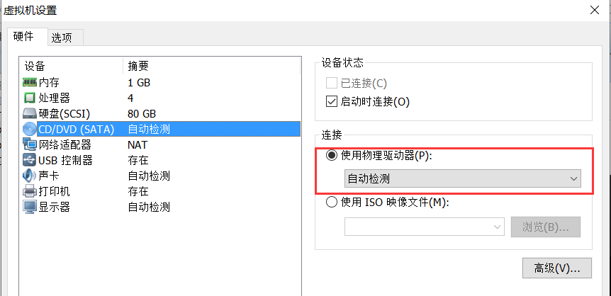
2.2.1 VMware配置网络环境
按要求给一台机器设置静态ip为：192.168.50.128，另一台机器的静态ip为：192.168.50.129。
使用NAT，虚拟机在一个子网中，通过物理机的IP上网。
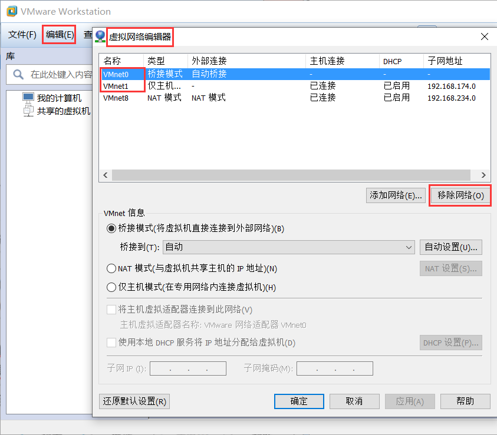去掉
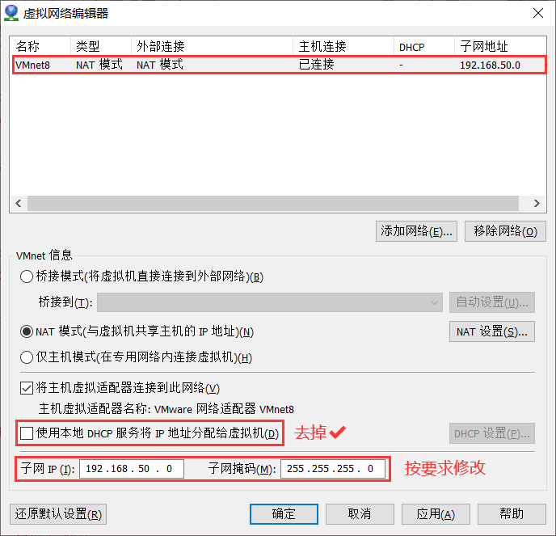使用本地DHCP服务将IP地址分配给虚拟机，并且设置子网IP为：192.168.50.0，子网掩码为：255.255.255.0。因此，在Ubuntu中，设置IP地址的时候，可以设置为192.168.50.x，x可以为1~255。选择
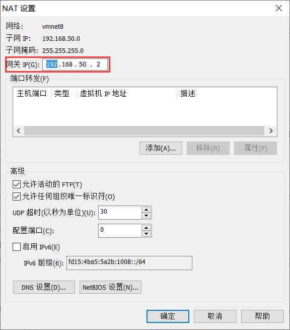NAT设置，打开NAT设置面板，查看网关地址。在VMWare的虚拟机管理界面，选择Ubuntu的
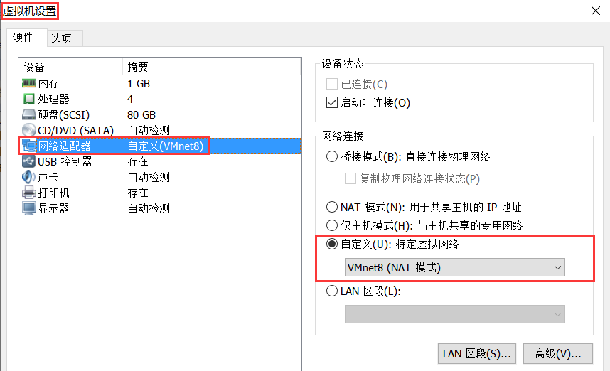编辑虚拟机设置，打开Ubuntu这个虚拟的设置界面。选择网络适配器，然后确定网络连接选中的是自定义中的VMnet8(NAT模式)。
2.2.2 为Ubuntu设置静态IP地址
通过Terminal命令行来设置IP地址
在命令行输入
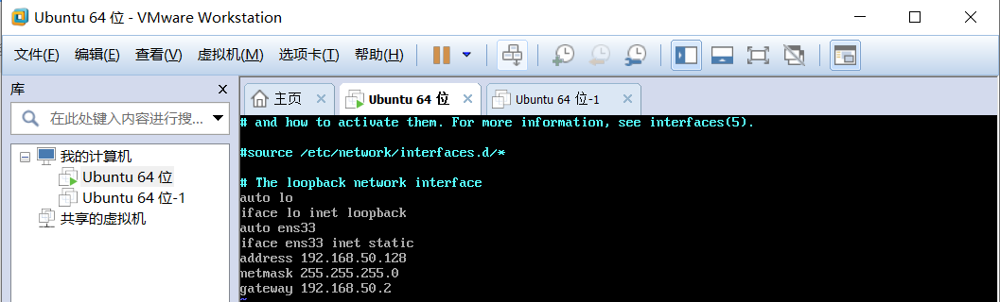sudo vi /etc/network/interfaces
# 在打开的文件中，若有内容，先全部删除
# 然后输入如下代码
# ip a查看网卡信息是ens33
auto lo
iface lo inet loopback
auto ens33
iface ens33 inet static
address 192.168.50.128
netmask 255.255.255.0
gateway 192.168.50.2配置DNS服务器
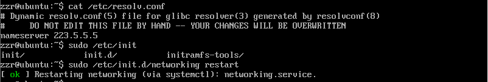sudo vi /etc/resolv.conf
# 在里面填入阿里的DNS：223.5.5.5
nameserver 223.5.5.5
# 在命令行中输入：
sudo /etc/init.d/networking restart重复以上步骤，配置第二个虚拟机的静态IP地址。
2.3 集群配置
2.3.1 集群配置要求
拓扑图
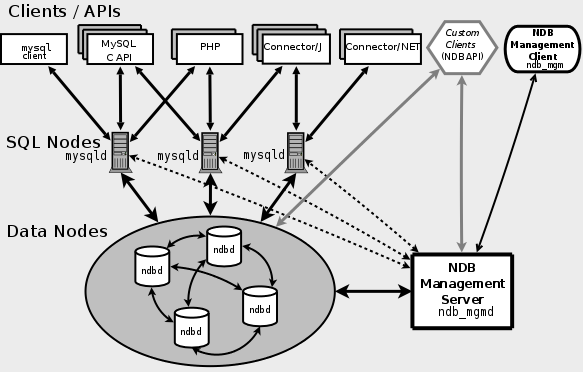集群配置要求
# ndbd：MySQL data nodes
# ndb_mgmd：server for the Cluster Manager
# mysqld and mysql：MySQL server/client节点 IP address 运行实例 nodeID 数据节点1 192.168.50.128 ndbd 11 数据节点2 192.168.50.129 ndbd 12 管理节点 192.168.50.129 ndb_mgmd 1 sql节点1 192.168.50.129 mysqld 13 sql节点2 192.168.50.128 mysqld 14 一般配置，数据节点和管理节点分离(需要3台虚拟机模拟实现)。由于此处只用了2台虚拟机。
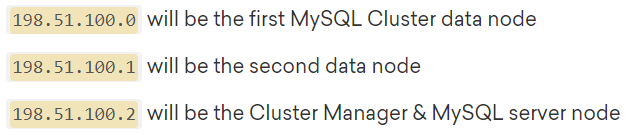
MySQL-Cluster的安装包下载，根据linux操作系统选择正确的版本
若之前安装过mysql-server，需要将mysql-server卸载
# 执行以下指令卸载mysql
sudo apt-get autoremove --purge mysql-server
sudo apt-get remove mysql-server
sudo apt-get autoremove mysql-server
sudo apt-get remove mysql-common2.3.2 准备阶段
针对
192.168.50.129，安装# 在命令行下
sudo adduser mysql
sudo usermod -aG sudo mysql把下载的mysql-cluster_8.0.19-1ubuntu16.04_amd64.deb-bundle.tar从windows共享给虚拟机(通过共享文件夹)
将MySQL-Cluster的安装包放入虚拟机的指定目录install文件夹，操作如下：
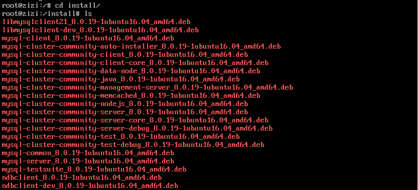# 在命令行的根目录下
mkdir install
# 通过共享文件夹
tar -xvf /mnt/hgfs/xxx/mysql-cluster_8.0.19-1ubuntu16.04_amd64.deb-bundle.tar -C install/
cd install安装
MySQL server binary# 安装依赖包
sudo apt update
# sudo apt-get update
sudo apt-get upgrade
sudo apt-get install libaio1 libmecab22.3.3 安装配置集群管理器
用dpkg指令在Cluster Manager 服务器(为192.168.50.129)上安装ndb_mgmd
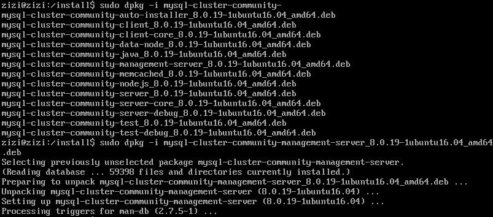# 进入install目录
sudo dpkg -i mysql-cluster-community-management-server_8.0.19-1ubuntu16.04_amd64.deb在第一次运行ndb_mgmd前需要对其进行配置，正确配置是保证数据节点正确同步和负载分配的前提。
Cluster Manager 应该是MySQL Cluster 第一个启动的组件.它需要一个配置文件来加载参数. 我门创建配置文件: /var/lib/mysql-cluster/config.ini.
# 从Windows编辑config.ini可能会报错，需要在Linux系统下编辑
# 在Cluster Manager 所在机器上创建 /var/lib/mysql-cluster目录:
sudo mkdir /var/lib/mysql-cluster
sudo vim /var/lib/mysql-cluster/config.ini
# 内容如下
[ndbd default]
# Options affecting ndbd processes on all data nodes:
NoOfReplicas=2 # Number of replicas
[ndb_mgmd]
# Management process options:
hostname=192.168.50.129 # Hostname of the manager
NodeId=1
datadir=/var/lib/mysql-cluster # Directory for the log files
[ndbd]
hostname=192.168.50.128 # Hostname/IP of the first data node
NodeId=11 # Node ID for this data node
datadir=/usr/local/mysql/data # Remote directory for the data files
[ndbd]
hostname=192.168.50.129 # Hostname/IP of the second data node
NodeId=12 # Node ID for this data node
datadir=/usr/local/mysql/data # Remote directory for the data files
[mysqld]
# SQL node options:
hostname=192.168.50.129 # MySQL server/client i manager
[mysqld]
# SQL node options:
hostname=192.168.50.128 # MySQL server/client i manager- [NDB_MGMD] 表示管理节点的配置，只能有一个
- [NDBD DEFAULT] 表示每个数据节点的默认配置，在每个节点的[NDBD]中不用再写这些选项，只能有一个
- [NDBD] 表示每个数据节点的配置，可以有多个
- [MYSQLD] 表示SQL节点的配置，可以有多个，分别写上不同的SQL节点的ip地址；如不写，只保留一个空节点，表示任意一个ip地址都可以进行访问。此节点的个数表明了可以用来连接数据节点的SQL节点总数
- 每个节点都有一个独立的id号，可以填写，比如nodeid=2，老版本使用id，新版本已经不使用id标识了。不填写，系统会按照配置文件的填写顺序自动分配
如果是生产环境，应该根据实际情况调整配置参数，参考MySQL Cluster. 你还可以增加 data nodes (ndbd) 或 MySQL server nodes (mysqld).
启动管理器
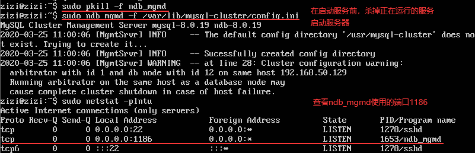# 查看是否有正在运行的服务进程
ps -aux | grep ndb_mgmd
# 在启动服务前，可能需要杀掉正在运行的服务:
sudo pkill -f ndb_mgmd
# 启动服务
sudo ndb_mgmd -f /var/lib/mysql-cluster/config.ini
#检查ndb_mgmd 使用的端口 1186
sudo netstat -plntu配置自动加载服务
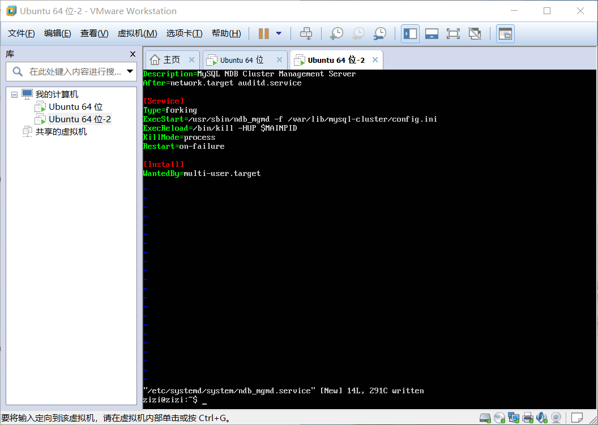# 在Ubuntu虚拟机下
# 打开并编辑下面 systemd Unit 文件
sudo vim /etc/systemd/system/ndb_mgmd.service
# 键入以下内容，保存并关闭
[Unit]
Description=MySQL NDB Cluster Management Server
After=network.target auditd.service
[Service]
Type=forking
ExecStart=/usr/sbin/ndb_mgmd -f /var/lib/mysql-cluster/config.ini
ExecReload=/bin/kill -HUP $MAINPID
KillMode=process
Restart=on-failure
[Install]
WantedBy=multi-user.target
# 上面只是加入了如何启动、停止和重启动ndb_mgmd进程的最小选项集合
# more information，参阅[systemd manual](https://www.freedesktop.org/software/systemd/man/systemd.service.html).# reload systemd’s manager configuration using daemon-reload
sudo systemctl daemon-reload
# enable the service we just created
# MySQL Cluster Manager starts on reboot
sudo systemctl enable ndb_mgmd
# start the service
sudo systemctl start ndb_mgmd
# verify that the NDB Cluster Management service is running
sudo systemctl status ndb_mgmdndb_mgmdMySQL Cluster Management server作为一个系统服务正在运行
设置
Cluster Manager允许其它MySQL Cluster节点连入假定在192.168.50.129上进行(同理另一个节点)
安装依赖包
# 修复损坏的软件包，尝试卸载出错的包，重新安装正确版本的
sudo apt-get –f install
sudo apt install libclass-methodmaker-perl安装数据节点包
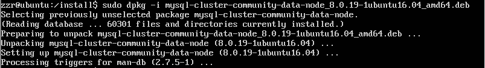# 进入install文件夹
sudo dpkg -i mysql-cluster-community-data-node_8.0.19-1ubuntu16.04_amd64.deb数据节点将从固定位置/etc/my.cnf获取配置文件.创建文件并编辑
sudo vim /etc/my.cnf
# 写入以下内容 两个虚拟机都一样
[mysql_cluster]
# Options for NDB Cluster processes:
ndb-connectstring=192.168.50.129 # location of cluster manager本配置设定在管理器配置数据目录为
/usr/local/mysql/data。运行服务前要创建相关目录sudo mkdir -p /usr/local/mysql/data。在成功启动数据节点的时候，会向该文件夹中写入数据，如下图所示。启动服务
sudo ndbd，NDB 数据节点守护程序成功启动同理见
192.168.50.128(192.168.50.129机器上的管理器服务要打开)如果出现连接问题，请打开防火墙：
sudo ufw allow from 192.168.50.129
sudo ufw allow from 192.168.50.128同配置集群管理器类似，配置数据节点服务自启动
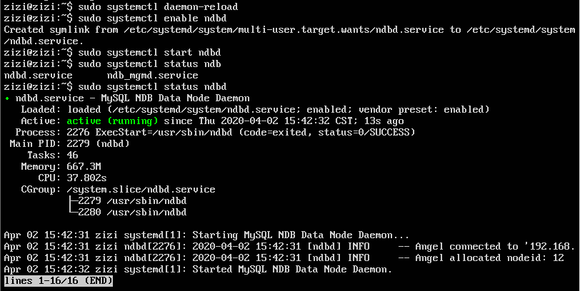# 打开并编辑如下 systemd Unit 文件
sudo vim /etc/systemd/system/ndbd.service
# 内容如下：
[Unit]
Description=MySQL NDB Data Node Daemon
After=network.target auditd.service
[Service]
Type=forking
ExecStart=/usr/sbin/ndbd
ExecReload=/bin/kill -HUP $MAINPID
KillMode=process
Restart=on-failure
[Install]
WantedBy=multi-user.target
# 采用daemon-reload重新加载systemd’s manager配置
sudo systemctl daemon-reload
# 让我们刚创建的服务生效，使data node daemon可以开机执行
sudo systemctl enable ndbd
# 启动服务
sudo systemctl start ndbd
# 禁止服务
sudo systemctl stop ndbd
# 验证NDB Cluster Management service服务正在执行
sudo systemctl status ndbd
2.3.5 配置并运行MySQL Server和Client
标准的MySQL server不支持 MySQL Cluster 引擎 NDB。这意味着我们需要安装含有定制的SQL服务器 MySQL Cluster软件。
192.168.50.129和192.168.50.128都作为MySQL Server node进入包含MySQL Cluster组件的目录
cd install在安装MySQL server 前，需要安装两个依赖库（如果已经安装过可忽略）
sudo apt update
sudo apt update
sudo apt install libaio1 libmecab2安装解压在install目录的软件包中的一些MySQL Cluster依赖包
cd /install/
sudo dpkg -i mysql-common_8.0.19-1ubuntu16.04_amd64.deb
sudo dpkg -i mysql-cluster-community-client-core_8.0.19-1ubuntu16.04_amd64.deb
sudo dpkg -i mysql-cluster-community-client_8.0.19-1ubuntu16.04_amd64.deb
sudo dpkg -i mysql-client_8.0.19-1ubuntu16.04_amd64.deb
sudo dpkg -i mysql-cluster-community-server-core_8.0.19-1ubuntu16.04_amd64.deb
sudo dpkg -i mysql-cluster-community-server_8.0.19-1ubuntu16.04_amd64.deb
# 此处若是出现依赖问题，输入以下命令，再重新执行一遍上面语句
sudo apt-get -f install
# 或者把依赖包删除 重装一遍
sudo apt-get purge libaio1
sudo apt-get purge libmecab2当安装mysql-cluster-community-server时，会出现配置提示，请求为mysql数据库root用户设置密码。在后面选项选择使用强安全密码
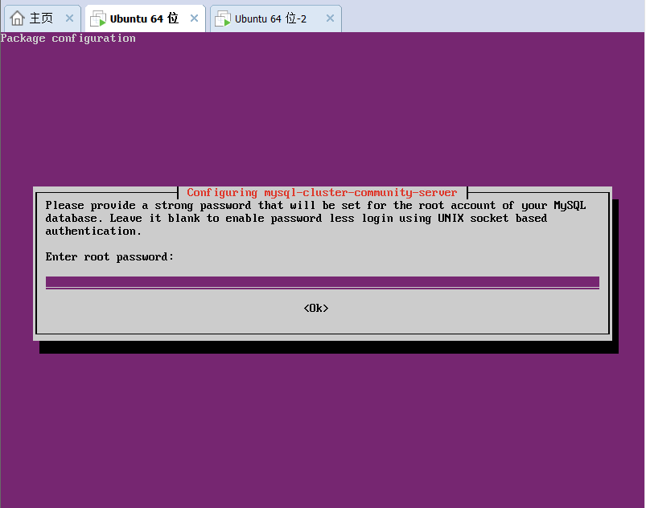 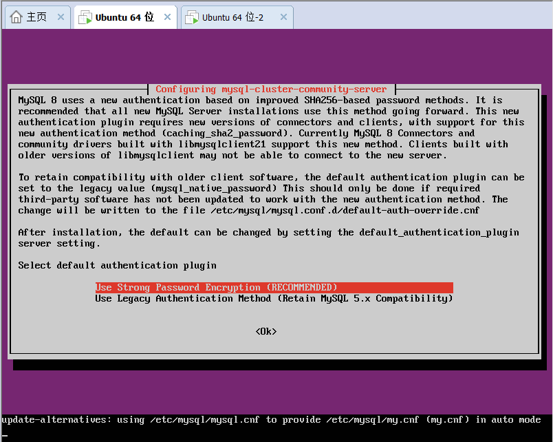安装MySQL server:
sudo dpkg -i mysql-server_8.0.19-1ubuntu16.04_amd64.deb配置MySQL server
# 打开MySQL Server 配置文件默认
sudo vim /etc/mysql/my.cnf可看到下列文本
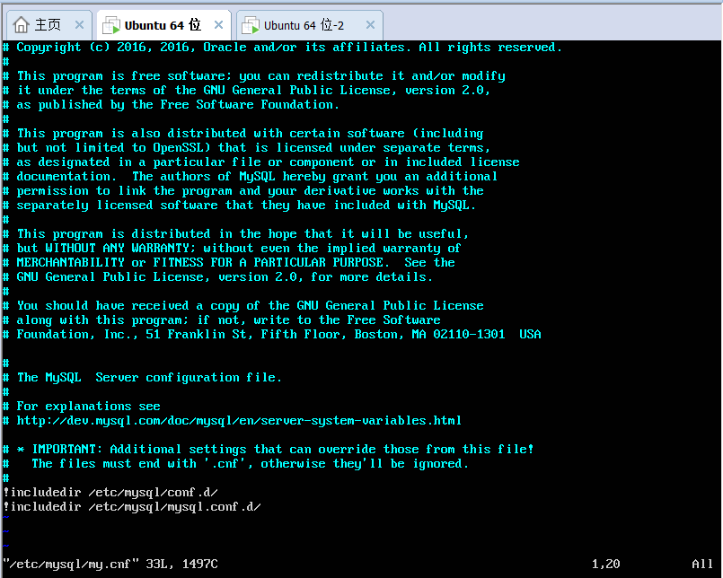往文本后追加(192.168.50.128填写的相同)
[mysqld]
# Options for mysqld process:
ndbcluster # run NDB storage engine
[mysql_cluster]
# Options for NDB Cluster processes:
ndb-connectstring=192.168.50.129 # location of management server
重启MySQL server，使上面的变化生效:
sudo systemctl restart mysqlMySQL默认开机自动启动。如果不能启动，下述命令可以修复:
sudo systemctl enable mysql
2.3.6 验证MySQL Cluster安装
为了验证MySQL Cluster正确安装, 登陆Cluster Manager / SQL Server节点，为192.168.50.129/192.168.50.128。
打开MySQL客户端连接到root账号：
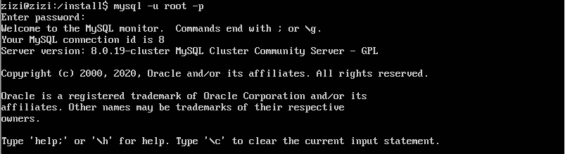mysql -u root -p在MySQL客户端中, 运行下列命令:
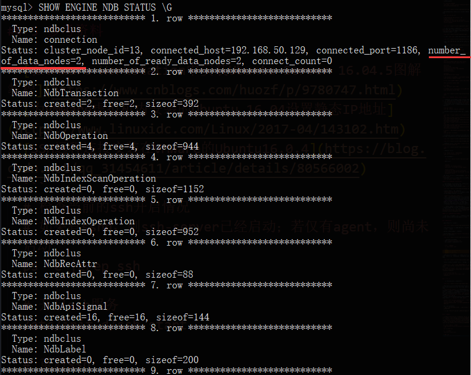SHOW ENGINE NDB STATUS \G，系统会显示NDB引擎的相关信息，表示成功连入MySQL Clusternumber of ready_data_nodes= 2如果一个数据节点挂了（本例中必须是那个没有安装MySQL Cluster管理器的节点），MySQL cluster还是可以继续工作
测试cluster的稳定性
shutting down非管理器节点（192.168.50.128），在整个过程中看到
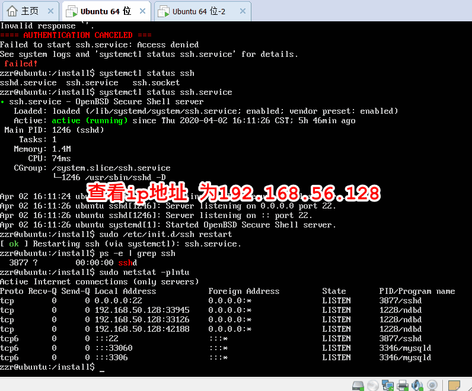number_of_ready_data_nodes从2变为1。再次开启服务，又由1变为2(这个变化过程有延迟，需要等待一会)。同理停止管理器节点上的ndbd服务。
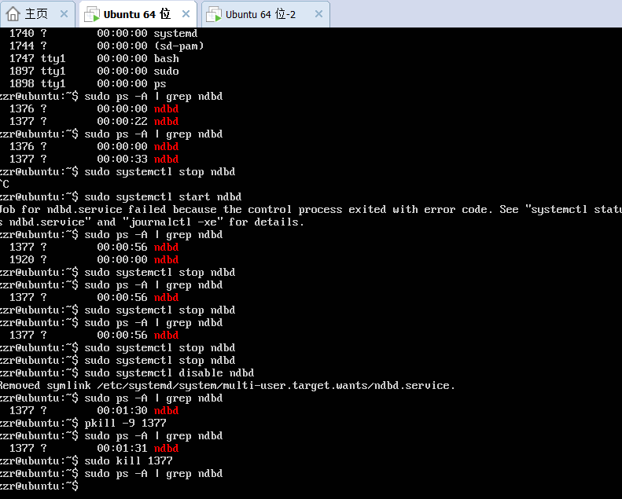
在集群管理器控制台上查看集群信息，命令为：
ndb_mgm。然后在集群管理器控制台输入SHOW，输出信息如下：192.168.50.128的数据节点ndbd断开连接的情况
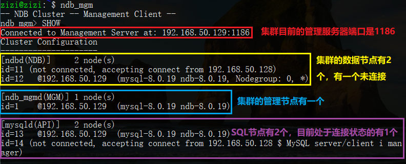
192.168.50.128的数据节点ndbd未断开连接的情况
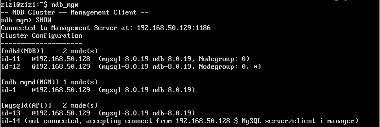192.168.50.128的mysql服务器启动
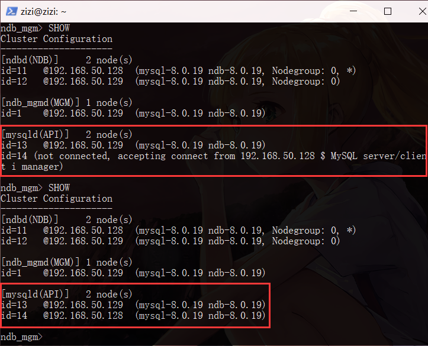退出MySQL客户端，使用quit或按CTRL-D
管理控制台功能很多，有很多其他的管理命令来管理集群和数据, 包括创建在线备份. 更多信息参考官方official MySQL documentation
2.3.7 向MySQL集群插入数据
注意为了使用集群功能, 必须使用NDB数据库引擎。如果使用InnoDB (default)或其他引擎,将不能使用集群。
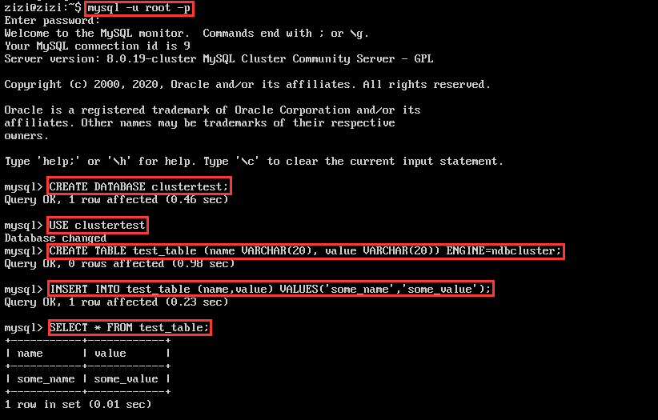# 打开MySQL客户端连接到root账号
mysql -u root -p
# 首先, 创建数据库clustertest:
CREATE DATABASE clustertest;
# 其次转到新数据库:
USE clustertest;
# 再次，创建表test_table:
# 需要显式规定ndbcluster引擎
CREATE TABLE test_table (name VARCHAR(20), value VARCHAR(20)) ENGINE=ndbcluster;
# 现在可以插入数据了:
INSERT INTO test_table (name,value) VALUES('some_name','some_value');
# 最后验证数据插入：
SELECT * FROM test_table;
# show databases-
- 我认为数据应该被插入了本地机器
- 在此处数据备份为2的话，则另一个数据节点有一份相同的备份
可以在my.cnf文件中设定默认数据存储引擎为ndbcluster，这样创建表时就不再规定引擎了。更多信息参考MySQL Reference Manual
2.4 结语
至此我们在Ubuntu 16.04 servers上安装和配置了a MySQL Cluster。需要注意的是这是一个很小的简化体系结构来说明配置过程，部署一个生产环境，还有许多其他的选项和特征需要去学习.。更多信息请参阅 MySQL Cluster documentation
2.5 验证可靠性
2.5.1 NDB存储引擎测试
在192.168.50.129的SQL节点创建数据库并且插入数据(一定要设置存储引擎为NDB)，在192.168.50.128的SQL节点可以查询到，两个SQL节点查询的数据时一致的，能够同步
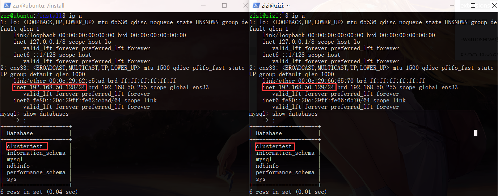use clustertest
2.5.2 单点故障测试
SQL节点发生单点故障
将SQL节点192.168.50.128上的MySQL服务停止
/etc/init.d/mysqld stop
# sudo systemctl stop mysqlndb_mgm查看cluster状态
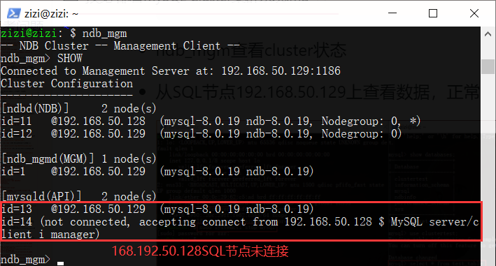从SQL节点192.168.50.129上查看数据，正常
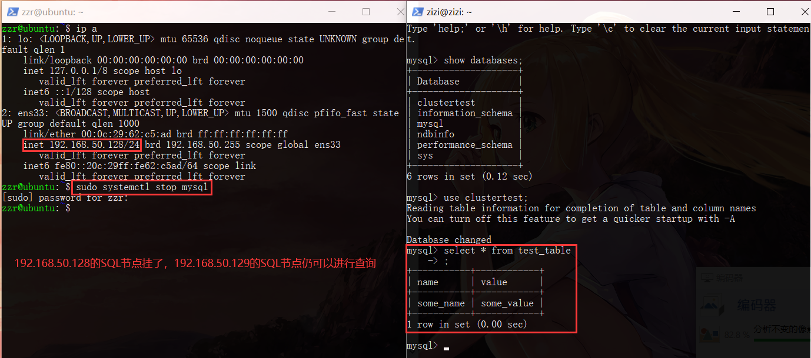 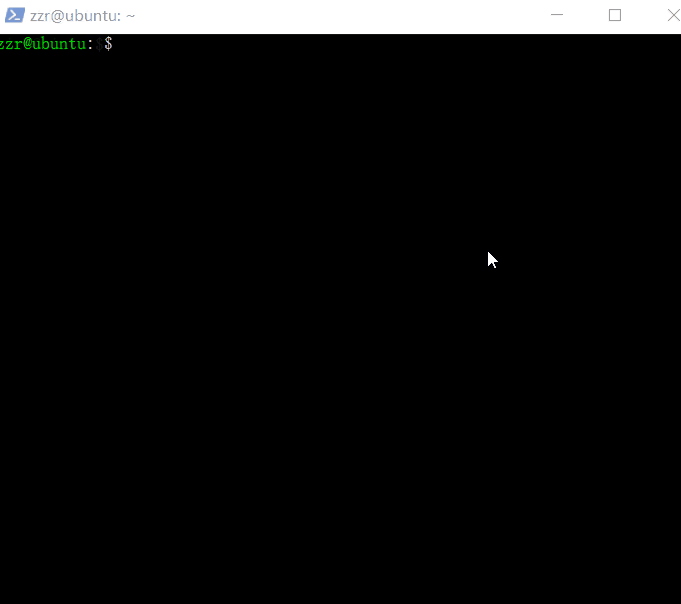SQL节点的单点故障并没有引起数据查询的故障。对于应用来说，需要改变的就是将以前对故障节点的访问改为对非故障节点的访问
NDB(数据节点)单点故障
在这个测试环境中，数据节点也是两个，那么他们对数据的存储是互相镜像还是一份数据分成几块存储呢？这个答案关键在于配置文件中[NDBD DEFAULT]组中的NoOfReplicas参数，如果这个参数等于1，表示只有一份数据，但是分成N块分别存储在N个数据节点上，如果该值等于2，则表示数据被分成N/2,每块数据都有两个备份，这样即使有任意一个节点发生故障，只要它的备份节点正常，数据就可以正常查询
将NDB节点192.168.50.129上的ndbd服务停止
ps -ef | grep ndbd
pkill -9 ndbdndb_mgm查看cluster状态，NDB节点192.168.50.129上已经挂掉
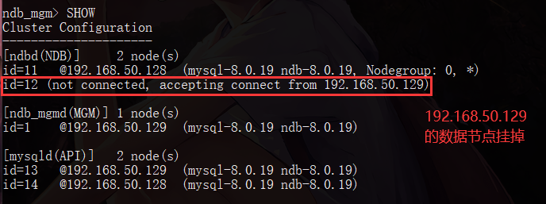从SQL节点192.168.50.128和SQL节点192.168.50.129上查看数据，正常

在此样例中，挂掉一个NDB节点不影响正常的数据查询，数据节点的冗余同样防止了NDB单点故障
如果该测试中，NoOfReplicas=1，如果有一个数据节点挂了，则无法正常访问完整数据
2.5.3 集群的关闭
- 关闭顺序：SQL节点->数据节点->管理节点
- NDB节点和管理节点的关闭都可以在管理节点的管理程序中完成，也可以分节点关闭
- 关闭Cluster节点不会停止sql节点数据库服务
- 但在关闭整个MySQL Cluster环境(内部关闭：ndb_mgm> shutdown)或者关闭某个SQL节点的时候，首先必须到SQL节点主机上来关闭SQL节点程序
2.6 思考问题
- 通过实验，你对一个分布式数据库系统有何理解？分布式数据库系统预计有何优越性？
- 理解：分布在同一个网络；逻辑上属于同一个系统；物理上分布在不同的节点上
- 优越性：
- 适合分布式数据管理，能有效地提高系统性能，吞吐率和响应速度提高
- 分布式数据库系统可利用现有的设备和系统，省时、省力、投资少
- 提高了系统的可用性、可靠性和并行执行度，并允许存储数据副本
- 根据实际需要，可增减某一场地，系统具有可扩展性
- 分布式数据库系统资源和数据分布在物理上不同的场地上，为系统所有用户共享
- 你能设计一个方案验证集群系统在可靠性上优于集中式数据库系统吗？
- 集中式数据库，单点，崩了就完了
- 同样是插入数据，你觉得MySQL Cluster和myCAT在实体完整性保持方面是否可能会有不同？为什么？
Entity Integrity ensures that there are no duplicate records within the table and that the field that identifies each record within the table is unique and never null.
- 实体完整性要求每个数据表都必须有主键，而作为主键的所有字段，其属性必须是独一及非空值
- MySQL Cluster：auto-sharding，需要内存很大(被诟病)
- myCAT: 分表分库，即将一个大表水平分割为 N个小表，存储在后端MySQL服务器里或者其他数据库里。早期myCAT没有检测，不同数据库的完整性无法保证，现在未知。
3 问题与解决
无法连接虚拟设备sata0:1
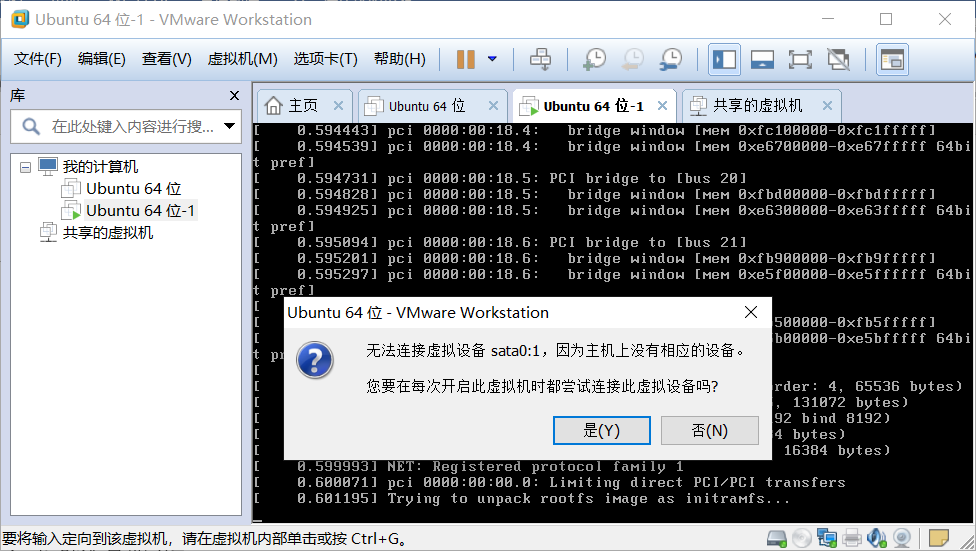解决：修改虚拟机 -> 右键设置硬件 -> CD/DVD(SATA) -> 使用 ISO 映像文件
但我认为这不影响虚拟机的使用所以就没深入解决
提供此类问题
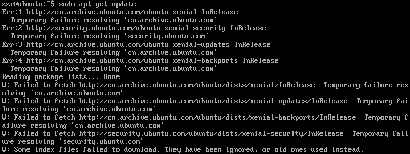temporary failure resolving cn.archive.ubuntu.com的解决思路- 原因：无法解析该域名
- 试试
nslookup www.baidu.com - 如果发现服务器的DNS没有配，则
# 打开配置文件
vi /etc/resolv.conf
# 添加
nameserver 114.114.114.114
nameserver 8.8.8.8
nameserver 223.5.5.5
报错：该虚拟机似乎正在使用中。如果该虚拟机未在使用，请按”获取所有权(T)”按钮获取。获取所有权失败。原因:VM异常关闭导致。
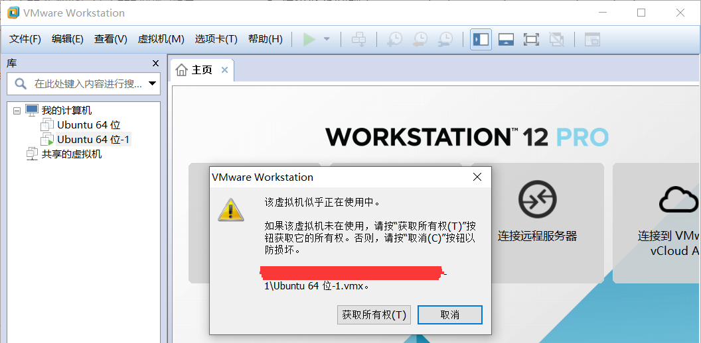解决：进入VM虚拟机的存放目录，删除后缀为.lck的文件
-
- 上述的方法都没有成功，通过在Windows程序与功能->修复vmware解决
每次重启虚拟机后，
/etc/resolv.conf文件就要重新配置，之前的都被抹去# resolv.conf文件其实是一个Link文件
# 在Ubuntu中有一个 resolvconf的服务，这个服务用来控制/etc/resolv.conf的内容
# 一旦我们重启了系统或者该服务，那么/etc/resolv.conf文件中的内容将被还原为原来的内容
sudo vi /etc/resolvconf/resolv.conf.d/base
# [应用更改](https://www.zhoushangren.com/archives/779)
sudo resolvconf -uping: unknown host www.baidu.com的解决方法# ping 网关
auto ens33
iface ens33 inet dhcp4 实验总结
VMware挂起
- 相当于物理机中的休眠，会将内存中的数据全部存放到对应的休眠文件中，占用的空间为内存大小，并且会对虚拟机执行关机操作
- 休眠后的虚拟机不占任何CPU、内存
- 相对于关机，只多了一个和内存大小相同的休眠文件
VMware不像virtualbox可以从外部将虚拟机强行终止，VMware的虚拟机若是不正常关机，下一次启动会出现很多莫名其妙的问题。
sudo apt-get update总是出问题的时候，通过科学上网、修改dns服务器、更改镜像源等操作后未果，可以不要选择大晚上执行命令，太闹心，再也不做这种傻逼事，放一放，换个时间可能会顺利很多。输入该命令之前可添加sudo apt-get clean，若是文件被锁住，则ps -aux | grep apt*获取有关进程的PID，然后sudo kill PID。update和upgrade的区别：update是更新软件列表，upgrade是更新软件。在执行
upgrade之前要先updateupdate: 同步 /etc/apt/sources.list 和 /etc/apt/sources.list.d 中列出的源的索引
upgrade：升级已安装的所有软件包，升级之后的版本就是本地索引里的apt和apt-get的区别
apt = apt-get、apt-cache 和 apt-config 中最常用命令选项的集合
用 apt 替换部分 apt-get 系列命令，但不是全部
5 参考资料
- 在VMware Workstation中安装Ubuntu Server 16.04.5图解教程
- 为VMware虚拟机内安装的Ubuntu 16.04设置静态IP地址
- SSH远程连接安装在VMware的Ubuntu16.0.4
# 查看虚拟机是否能够ping外网
# 不行，配置DNS服务器 `sudo vi /etc/resolv.conf`
# 重启网络sudo /etc/init.d/networking restart
# 检查当前的ssh开启情况
# 如果有sshd，则ssh-server已经启动；若仅有agent，则尚未启动
ps -e |grep ssh
# 查看端口情况
sudo netstat -plntu
# 开启ssh服务
/etc/init.d/ssh start
# 重启ssh
sudo /etc/init.d/ssh restart
# 当主机ssh连接虚拟机出现ssh: connect to host 192.168.50.129 port 22: Connection timed out
# 解决1:测试虚拟机是否能访问外网 - MySQL Cluster搭建与测试
- MySQL Cluster技术详解